Prachi Patel
Designer, developer, and photographer in New York City. I build AI-powered tools and photograph architecture.
Studio PAP
An AI-powered design workspace for professional UI review. Designers capture a screen, get structured feedback, keep the conversation going, and export a report without leaving their workflow.
- Role
- Product strategy, UX/UI design, frontend, backend, AI integration
- Duration
- 8 weeks
- Platform
- macOS desktop
- Built with
- React, TypeScript, Electron, Python, FastAPI, OpenAI Responses API
The problem
Designers switch between Figma, browsers, AI tools, and documentation to review their work. That context switching breaks creative flow and makes AI feedback less useful.
The solution
Studio PAP puts screen capture, contextual AI analysis, conversation, voice, and report export in one desktop workspace, so designers stay focused while they get feedback.

Sign in
A clean sign-in screen gets designers into the workspace quickly and sets the visual identity for the whole app.

Workspace dashboard
The dashboard is home base for capturing screens, uploading designs, and reopening past analyses and chats.

Structured design review
Screenshots become critiques scored on accessibility, hierarchy, typography, spacing, and color, with a top priority to fix first.

Contextual conversations
The assistant remembers the design under review, so follow-up questions continue the review instead of restarting it.

Voice input
Speech is transcribed in real time, so designers can ask follow-up questions hands-free.

Floating assistant
A floating assistant stays available while you work in other apps and answers spoken questions.

PDF reports
Findings, design scores, and recommendations export as a structured PDF for documentation and stakeholders.

Themes
Multiple themes, including this light one, change the look without changing layout, hierarchy, or function.
Zenith
A high-end restaurant digital menu concept, designed to feel calm and considered rather than busy or promotional.
- Role
- UI/UX design
- Type
- Personal design project
- Platform
- Mobile & tablet menu concept
- Built with
- Figma
The problem
Most restaurant menus try to do too much at once, heavy imagery, pricing call-outs, promotions, all competing for attention on a small screen.
The approach
I stripped away the usual visual clutter and let typography, spacing, and restraint carry the design, so each dish gets room to feel considered rather than like one line in a long list.
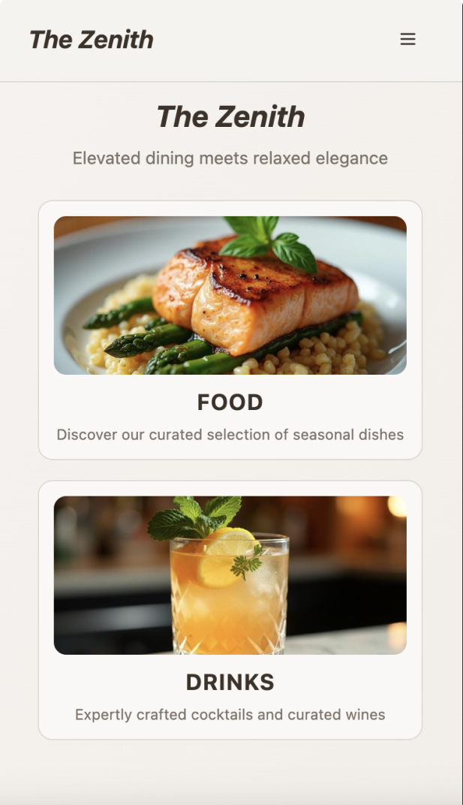
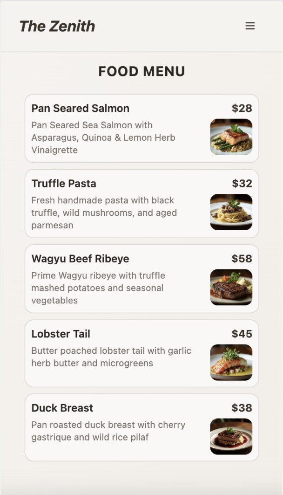
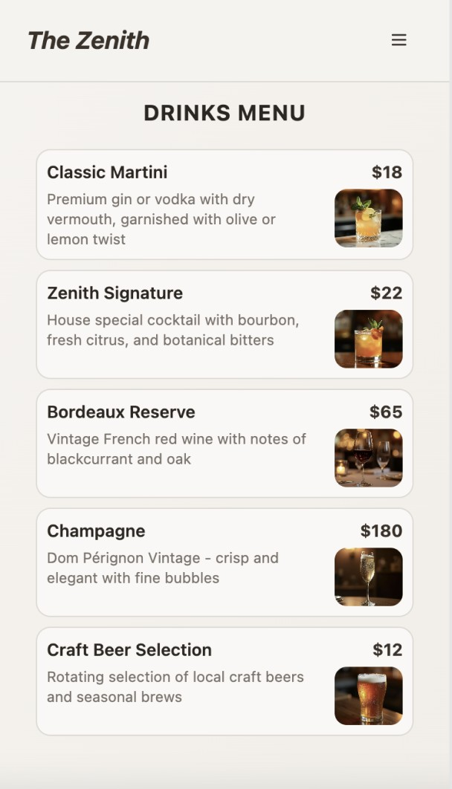
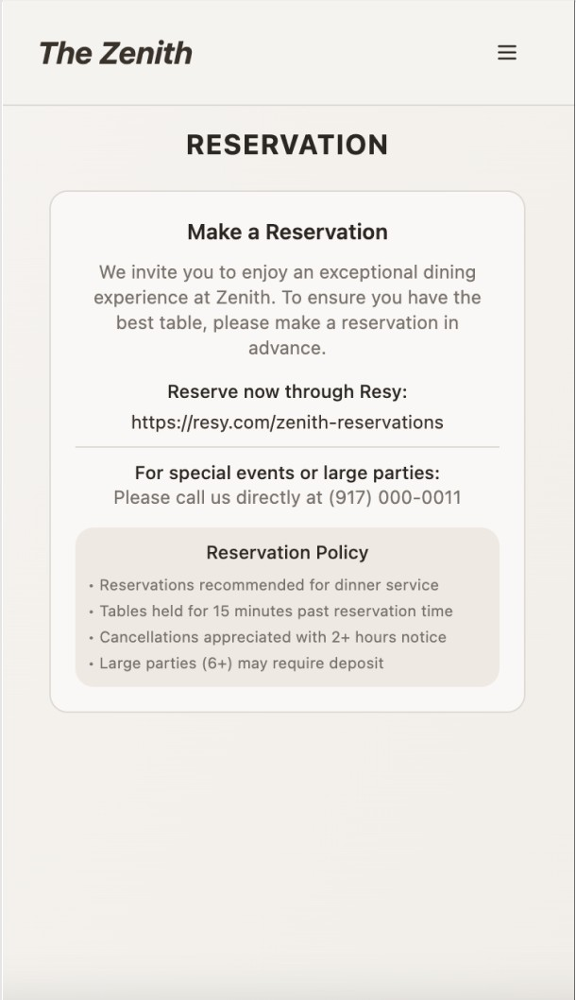
Process
Before opening Figma, I sketched the site map and each screen by hand, working out navigation and layout on paper first.
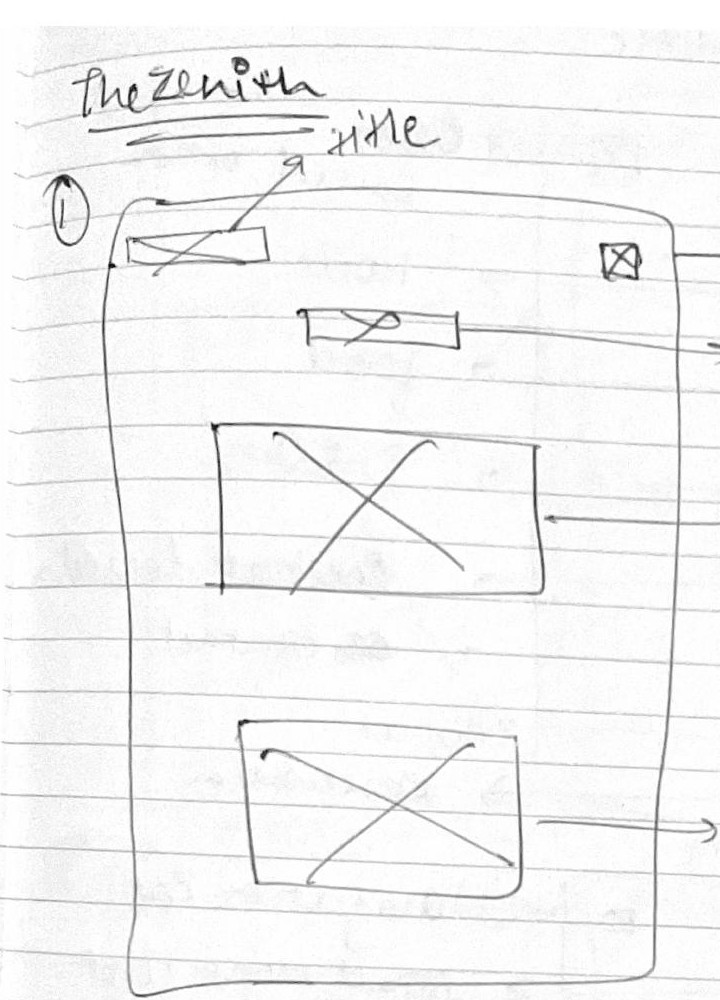
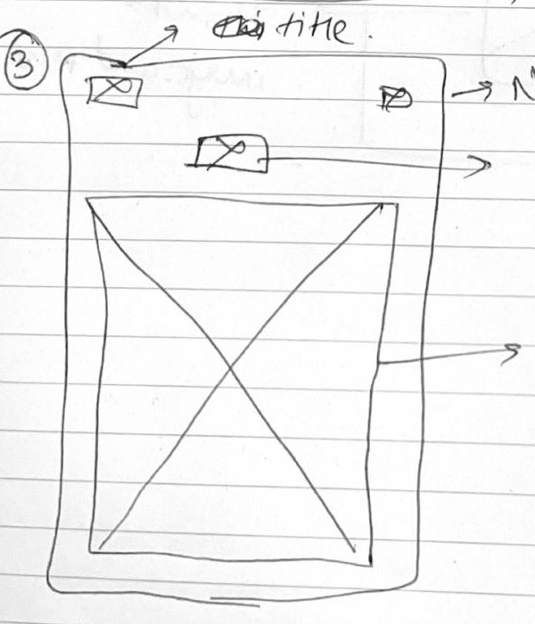
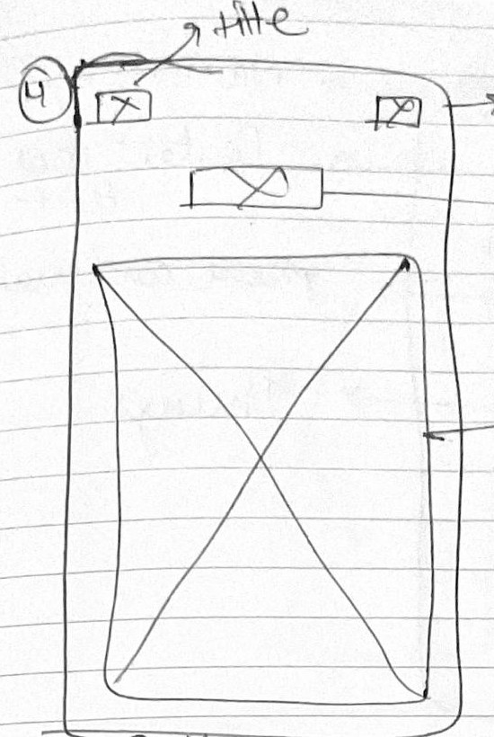
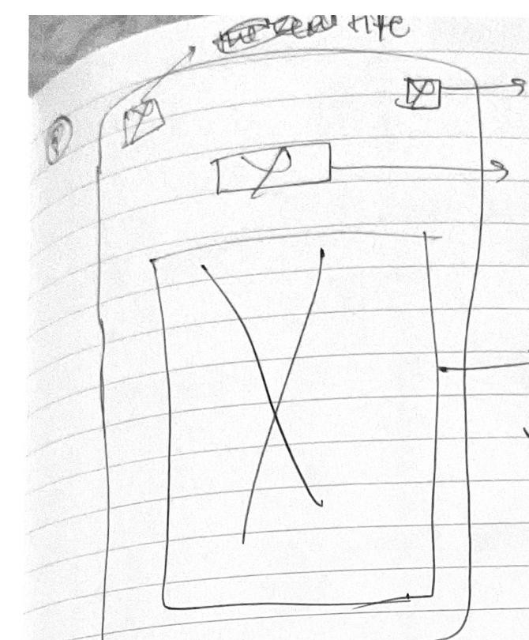
Nova
A wellness app concept bringing sleep podcasts, weight tracking, and journaling into one place, without it feeling like a pile of unrelated tools.
- Role
- UI/UX design
- Type
- Personal design project
- Platform
- Mobile app concept
- Built with
- Figma
The problem
Combining sleep, weight tracking, and journaling into a single app risked feeling like four unrelated features bolted together, each with its own visual logic.
The approach
I took structural inspiration from print journalism, using the same underlying layout across all four sections, so the app reads as one coherent product instead of a random toolkit.
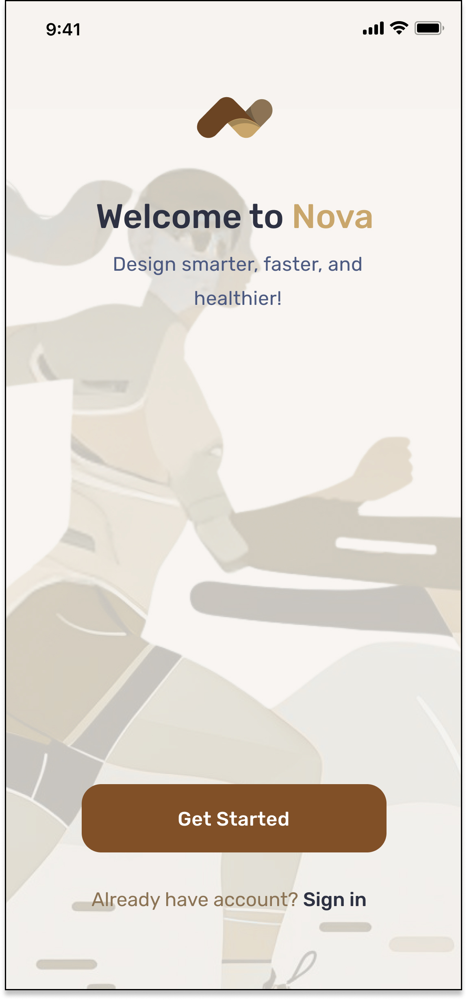
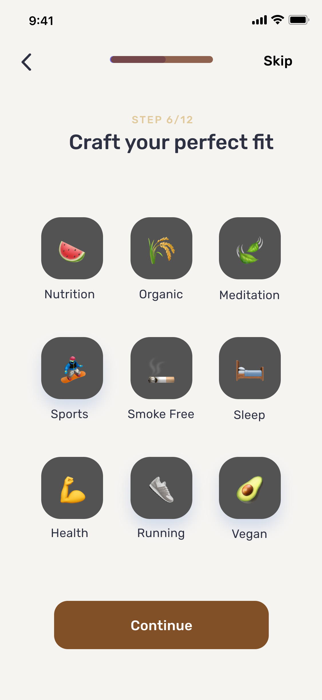
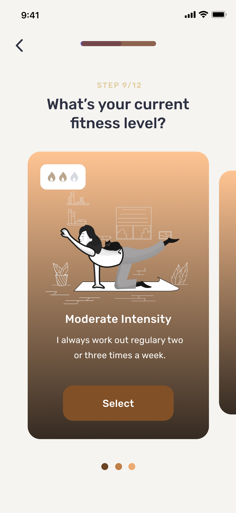
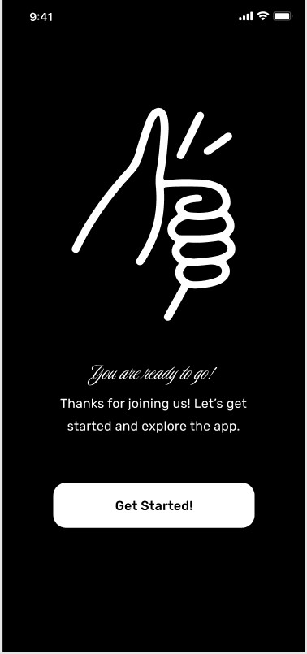
Process
The onboarding flow started as hand-drawn wireframes mapping out every screen, from welcome through account setup, before any visual design decisions were made.
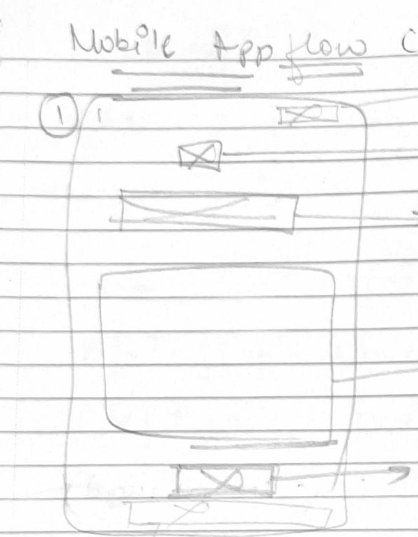
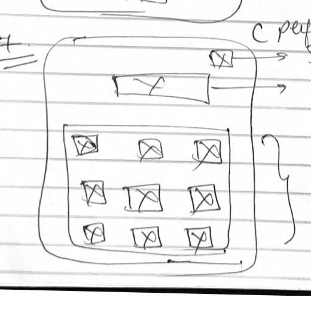
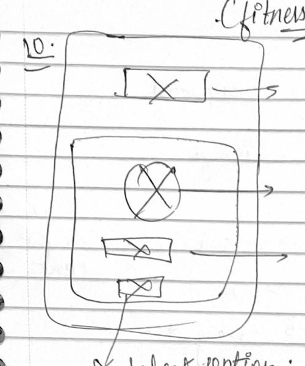
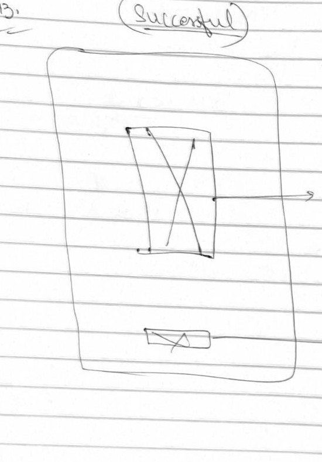
Photography
A photography site documenting New York City architecture through rhythm, texture, structure, and atmosphere.
- Focus
- Architectural photography
- Location
- New York City
- Themes
- Texture, structure, atmosphere, rhythm
- Live site
- prachi-photography.vercel.app

Architectural photography site
The site presents my photographs of New York buildings alongside a short account of how I make them. Visit the live site
Process
Observation
I walk the city and document repetition, shadow, geometry, and architectural detail.
Composition
Framing and negative space turn buildings into structured visual compositions.
Design thinking
My graphic design and computer science background shapes how I approach hierarchy, systems, and visual storytelling.
Selected photographs


Articles & talks
Articles
- Studio PAP case study on BehanceThe problem, the design, and the architecture behind an AI-powered design workspace.
About
I'm a designer, developer, and photographer based in New York City. I'm completing a B.A. in Computer Science with a minor in Graphic Design at Pace University.
Studio PAP took me beyond interface design and into building a complete AI-powered product. My photography comes from the same interest in structure, rhythm, and visual systems.
I care about designing AI tools that support creative work instead of interrupting it.
- patelprachi670@gmail.com
- Photography
- prachi-photography.vercel.app